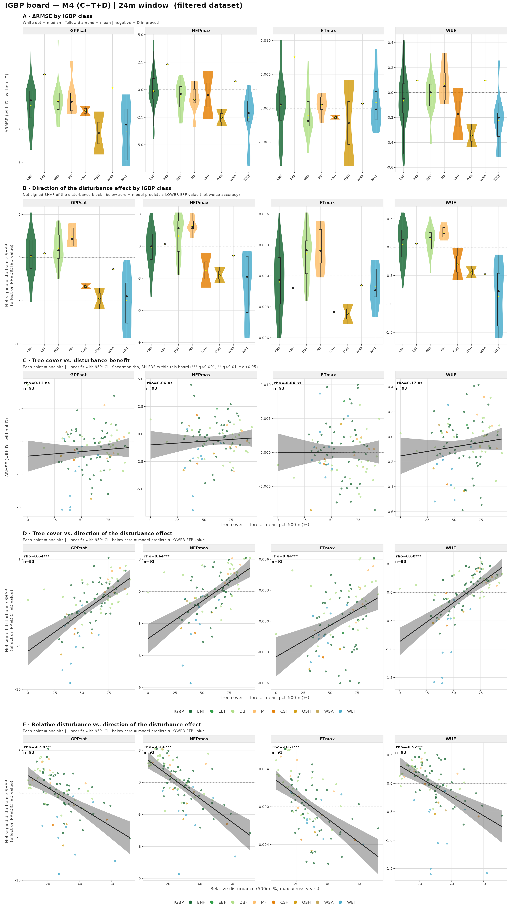
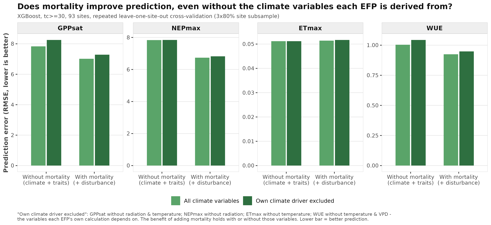
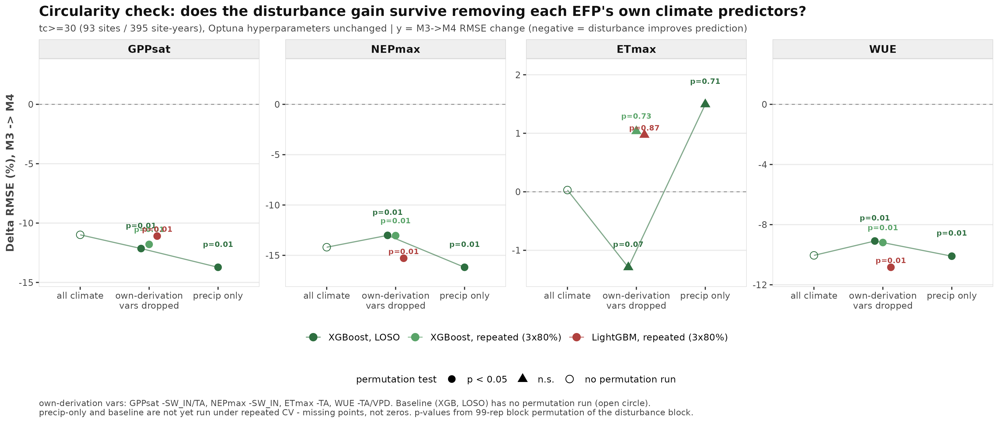
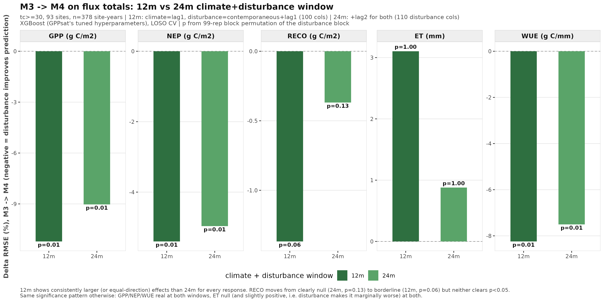

Circularity of climate predictors for EFPs: where Miguel is right, where the analysis can fight back
Date: 2026-09-24 Question addressed: how serious is the conceptual circularity Miguel raised at the 2026-09-14 FORTRACK meeting (climate variables used to predict EFPs that are themselves derived from those variables), how much of it the analysis defends against, and what to do about it. Written from the two key papers (Reichstein et al. 2014, Migliavacca et al. 2021) plus the EFP code, and deliberately independent of the post-meeting tests (see the end for how those fit in).
Short version: Miguel is right about the mechanism, but the consequence falls mainly on what can be said about climate, not on the mortality result.
1. Where Miguel is right
- The EFPs embed climate variables that are also predictors. From
notebooks/14_calc_EFPs.ipynb (EFPcalc_year()), confirmed against the Methods of Migliavacca et al. 2021:
| EFP |
climate quantities inside its own derivation |
how |
| GPPsat |
radiation (continuous), temperature |
light-response curve; growing-season filter; upstream Reco partitioning |
| NEPmax |
radiation (threshold only) |
daytime filter |
| ETmax |
temperature |
LE to ET conversion |
| WUE / uWUE |
temperature, VPD |
GPP/ET; uWUE = GPP x sqrt(VPD) / ET |
- Lagging does not fully dissolve it. The climate block is the prior 12 (or 24) months, never same-year, so there is no literal reuse of data. But last year's climate is a good proxy for this year's at the same site, so the baseline model can partly rediscover the EFP definition.
- Leave-one-site-out CV does not help here. It stops site-identity leakage; a definitional link generalises to held-out sites just as well.
- Consequence: the climate block cannot be interpreted. No "climate explains X%", and no climate-versus-disturbance importance shares.
- The precedent papers do not match this exact design. Migliavacca et al. use site-mean climate and between-site variation; this analysis uses lagged monthly climate at the site-year level.
2. Where the analysis can fight back
- The estimand is the increment from mortality. M3 and M4 differ only in the disturbance block, which comes from an independent satellite product (no shared derivation with the tower data). Climate-EFP coupling makes the baseline stronger, which works against finding a mortality effect. Not airtight: climate and mortality are correlated, so the two blocks can trade information.
- Dropping climate would be worse. Drought stresses ecosystems and kills trees; without a climate block the mortality effect is confounded.
- EFPs are not tautological with climate (Reichstein et al. 2014). The abstract reports that correlations between an EFP (seasonal carbon-use efficiency) and climate or environmental variables "remain below 0.6, leaving almost 70% of variance unexplained" (Fig. 3, p. 13700). The residual is attributed to traits and to processes that set carbon residence time, explicitly including disturbance events such as fire (p. 13699). That is the rationale for a disturbance block.
- The reference EFP paper does the same thing (Migliavacca et al. 2021). It predicts EFP principal components from mean Tair, VPD, SWin, precipitation and CSWI alongside vegetation structure, with random-forest importance (p. 469, Fig. 3, p. 471). Coauthors include Reichstein, Mahecha, Musavi and Nelson.
- The hypothesis is already stated there. p. 470: "Consider two contiguous plots of forest experiencing the same climate conditions, one disturbed and the other not", with the undisturbed one expected to have higher maximum photosynthesis and NEP. p. 471: land surface models "lack flexibility in representing the response of respiration rates and carbon-use efficiency to climate, nutrients, disturbances and substrate availability".
- Circularity cannot manufacture a dose-response in the disturbance variable. The signed disturbance SHAP falls with relative disturbance (rho about -0.5 to -0.7 at 24 m, Fig. 5 panel E).

Fig. 5 board (24 m window). Panel E is the relevant one: each point is a site, x = relative disturbance, y = net signed disturbance SHAP (effect on the predicted EFP). The line is a linear fit with Spearman rho and BH-FDR stars. The downward trend is a dose-response in the disturbance variable itself, which a climate-EFP definitional link cannot produce.
3. What the fight-back does not cover
- Baseline skill and any interpretation of the climate block.
- Causal wording. Migliavacca et al. warn that regression dependencies are causal only in the absence of hidden confounders and test this with invariant causal prediction. "Effect of tree mortality on EFPs" should be worded as an association conditional on climate and traits unless causality can be defended.
- Disturbance partly standing in for missing climate information (see section 5).
4. Recommended actions, in order of value for cost
Reframe (no new analysis). Climate is a confounder control; the M3 to M4 increment is the estimand. Use associational language, do not interpret climate importance, cite Reichstein 2014 and Migliavacca 2021.
Keep the climate-exclusion check as one Methods/Supplement paragraph. It turns the argument into evidence (section 5).
Put the flux-totals result in the supplement as robustness (section 5).
Static long-term climate descriptors only if a coauthor or reviewer pushes (René's suggestion, also what Migliavacca et al. do). It would also probe the "substitution" reading.
Not recommended now: restructuring the main analysis, or the NDVI/LAI/AGB alternative predictors (heavy, and NDVI overlaps with the spectral origin of the disturbance product, as Clemens noted).
5. How the post-meeting tests fit (evidence, not needed for the argument above)
- Climate-exclusion check (each EFP's own derivation variables dropped, plus a precipitation-only extreme; XGBoost/LightGBM, LOSO and repeated CV, 99-rep permutation): the disturbance gain persisted at -9% to -16% (p = 0.01) for GPPsat, NEPmax and WUE; ETmax stayed null. The gain often grew as climate was removed, which is why the claim should be "adds information beyond climate and traits", not "is the cause".

Simplified version (XGBoost, repeated CV 3x80%). Bars are prediction error (RMSE, lower is better) without and with mortality, once with all climate variables and once with each EFP's own climate driver excluded. Mortality lowers the error for GPPsat, NEPmax and WUE in both cases; ETmax stays flat.

Full version: change in RMSE from adding mortality (negative = improvement) across scenarios (all climate, own-derivation variables dropped, precipitation only), for XGBoost (LOSO and repeated CV) and LightGBM (repeated CV). Point shape shows the 99-rep permutation result (filled = p < 0.05). Precipitation-only and baseline were not run under repeated CV, so those points are absent, not zero.
- Circularity-free response (growing-season accumulated flux totals from raw FLUXNET daily data,
predict_fluxes/): GPP -9 to -11%, WUE -7.5 to -8%, NEP about -5% (p = 0.01 each); RECO and ET null. Same significance pattern as the EFPs, smaller effects.

Change in RMSE from adding disturbance for growing-season accumulated GPP, NEP, RECO, ET and WUE, at the 12 m (lag 1) and 24 m (lag 1+2) climate and disturbance windows, with permutation p-values. These totals are plain sums, so they cannot share the climate dependency of the fitted EFPs. The 12 m window is slightly stronger; RECO is borderline at 12 m (p = 0.06) and ET is null at both.
Provenance
- Reichstein M. et al. (2014), Linking plant and ecosystem functional biogeography, PNAS 111(38):13697-13702.
- Migliavacca M. et al. (2021), The three major axes of terrestrial ecosystem function, Nature 598:468-472. Only the main text and the start of Methods were read; Extended Data and the Supplement (including the invariant causal prediction details) were not.
- Both PDFs are in
manuscript/key papers/ and are not tracked in git (copyright).
- EFP code:
notebooks/14_calc_EFPs.ipynb, EFPcalc_year(). Earlier report: daily_reports/2026-09-17-efp-calculation-and-circularity.md.